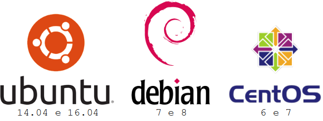
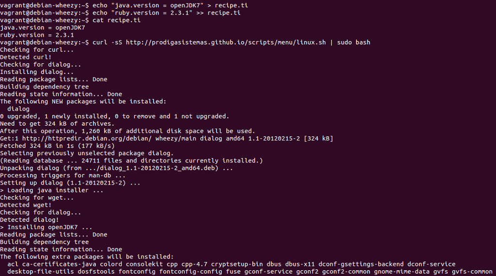

Pródiga Sistemas - Tools Installer
Central de instalação de ferramentas Open Source utilizadas por nós.
Distribuições Linux suportadas:

OBS.: É preciso ter instalado o pacote curl
No Debian ou Ubuntu: sudo apt-get -y install curl
No CentOS: sudo yum -y install curl
> Provisionamento manual
O comando abaixo inicia o menu principal para instalação das ferramentas
curl -sS http://prodigasistemas.github.io/scripts/menu/linux.sh | sudo bash

> Provisionamento automático
As receitas de instalação estão disponíveis aqui. Basta você criar um arquivo recipe.ti e executar o mesmo comando acima para as ferramentas serem instaladas e configuradas automaticamente.
Exemplo de instalação do Jenkins CI
curl -sS prodigasistemas.github.io/scripts/recipes/jenkins/recipe.ti > recipe.ti
curl -sS http://prodigasistemas.github.io/scripts/menu/linux.sh | sudo bash

Pródiga Sistemas © 2016